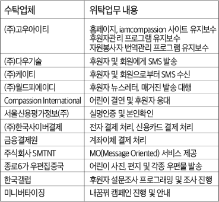

- 개인정보 수집.이용 및 위탁에 관한동의
- ‘한국컴패션'(이하 '기관')은 회원님의 개인정보를 중요시하며,
정보통신망 이용촉진 및 정보보호에 관한 법률 및 개인정보 보호법 등 관련 법령상의 개인정보보호 규정을 준수하고 있습니다.
기관은 개인정보 취급방침을 통하여 회원님께서 제공하시는 개인정보가 어떠한 용도와 방식으로 이용되고 있으며 개인정보보호를 위해
어떠한 조치가 취해지고 있는지 알려드리고자 합니다. 기관은 개인정보 취급방침을 개정하는 경우 웹사이트 공지사항(또는 개별공지)을 통하여
공지할 것입니다.
본 방침은 2014년 7월 1일부터 시행됩니다.
- 1. 개인정보의 수집 및 이용 목적
기관은 수집한 개인정보를 다음의 목적을 위해 활용합니다.
1)캠페인 진행 및 안내
비전트립 당첨자 본인 확인 및 안내, 내꿈꿔 캠페인 진행
2) 홈페이지 회원 가입 및 관리
회원제 서비스 이용에 따른 본인확인, 개인 식별, 불량회원의 부정 이용 방지와 비인가 사용 방지, 가입 의사 확인, 연령확인, 만 14세 미만 아동 개인정보 수집 시 법정 대리인 동의여부 확인, 불만처리 등 민원처리, 고지사항 전달
3) 후원자 서비스 제공
개인식별, 후원금 납부 관련 서비스 이용, 고지사항 전달, 이벤트 안내 등 마케팅 활동, 후원사실 확인을 위한 기록보존, 후원 신청, 후원금 결제, 청구서 등 발송, 자원봉사 신청
4) 신규 서비스 개발 및 컴패션 자체 후원자 대상 마케팅, 광고에의 활용
신규 서비스 개발 및 맞춤 서비스 제공, 통계학적 특성에 따른 서비스 제공 및 광고 게재, 서비스의 유효성 확인, 이벤트 및 광고성 정보 제공 및 참여기회 제공, 접속빈도 파악, 회원의 서비스이용에 대한 통계.
- 2. 개인정보의 보유 및 이용기간
원칙적으로, 개인정보 수집 및 이용목적이 달성된 후에는 해당 정보를 지체 없이 파기합니다. 단, 관계법령의 규정에 의하여 보존할 필요가 있는 경우 기관은 아래와 같이 관계법령에서 정한 일정한 기간 동안 회원정보를 보관하며, 보존 기간은 아래와 같습니다.
1) 계약 또는 청약철회 등에 관한 기록
- 보존 이유 : 전자상거래 등에서의 소비자보호에 관한 법룔 제6조 및 시행령 제6조
- 보존 기간 : 5년
2) 대금결제 및 재화 등의 공급에 관한 기록
- 보존 이유 : 전자상거래 등에서의 소비자보호에 관한 법룔 제6조 및 시행령 제6조
- 보존 기간 : 5년
3) 소비자의 불만 또는 분쟁처리에 관한 기록
- 보존 이유 : 전자상거래 등에서의 소비자보호에 관한 법룔 제6조 및 시행령 제6조
- 보존 기간 : 3년
4) 본인확인에 관한 기록
- 보존 이유 : 정보통신망 이용촉진 및 정보보호에 관한 법률 제 44조의5 및 시행령 제 29조
- 보존 기간 : 6개월
5) 접속에 관한 기록
- 보존 이유 : 통신비밀보호법 제15조의2 및 시행령 제41조
- 보존 기간 : 3개월
- 3. 수집하는 개인정보의 항목
기관은 캠페인을 위해 아래와 같은 개인정보를 수집하고 있습니다.
1) 수집항목 : 이름, 생년월일, 성별, 로그인ID, 비밀번호, 후원자번호, 자택 전화번호, 자택 주소, 휴대전화번호, 이메일, 직업, 회사전화번호, 법정대리인정보, 주민등록번호, 종교, 신용카드 정보, 은행계좌 정보, 서비스 이용 기록, 접속 로그, 쿠키, 접속 IP 정보, 결제기록
2) 개인정보 수집방법 : 홈페이지(회원 가입), 캠페인사이트(캠페인참여), 서면 양식, 전화/팩스를 통한 회원 가입
- 4. 개인정보의 파기절차 및 방법
기관은 원칙적으로 개인정보 수집 및 이용목적이 달성된 후에는 해당 정보를 지체 없이 파기합니다.
파기절차 및 방법은 다음과 같습니다.
1) 파기절차
- 회원님이 회원가입 등을 위해 입력하신 정보는 목적이 달성된 후 별도의 데이터베이스로 옮겨져(종이의 경우 별도의 서류함) 내부 방침 및 기타 관련 법령에 의한 정보보호 사유에 따라(보유 및 이용기간 참조) 일정 기간 저장된 후 파기됩니다.
2) 파기방법
- 전자적 파일형태로 저장된 개인정보는 기록을 재생할 수 없는 기술적 방법을 사용하여 삭제, 종이에 출력된 개인정보는 분쇄기로 분쇄하거나 소각을 통하여 파기합니다.
- 5. 개인정보 제공
기관은 원칙적으로 개인정보 수집 및 이용목적이 달성된 후에는 해당 정보를 지체 없이 파기합니다.
기관은 이용자의 개인정보를 원칙적으로 외부에 제공하지 않습니다. 다만, 아래의 경우에는 예외로 합니다.
- 이용자들이 사전에 동의한 경우
- 법령의 규정에 의거하거나, 수사 목적으로 법령에 정해진 절차와 방법에 따라 수사기관의 요구가 있는 경우
- 6. 수집한 개인정보의 위탁
기관은 후원자 서비스 향상을 위하여 다음과 같이 일부 개인정보 취급 업무를 외부 전문업체 위탁하고 있으며, 개인정보 보호법 26조에 따라 위탁계약 시 개인정보가 안전하게 관리될 수 있도록 필요한 사항을 규정하고 있습니다.

- 7. 이용자 및 법정대리인의 권리와 그 행사방법
이용자 및 법정 대리인은 언제든지 등록되어 있는 본인 혹은 당해 만 14세 미만 아동의 개인정보를 조회하거나 수정할 수 있으며 가입해지를 요청할 수도 있습니다. 이용자 혹은 만 14세 미만 아동의 개인정보 조회ㆍ수정을 위해서는 ‘회원정보수정’ 메뉴를, 가입해지(동의철회)를 위해서는 ‘회원탈퇴’ 메뉴를 클릭해서 요청을 하시면 본인 확인 절차를 거친 후 직접 열람, 정정 또는 탈퇴가 가능합니다.
혹은 개인정보관리책임자에게 서면, 전화 또는 이메일로 연락하시면 지체 없이 조치하겠습니다.
회원님이 개인정보의 오류에 대한 정정을 요청하신 경우에는 정정을 완료하기 전까지 당해 개인정보를 이용 또는 제공하지 않습니다. 또한, 잘못된 개인정보를 제3자에게 이미 제공한 경우에는 정정 처리결과를 제3자에게 지체 없이 통지하여 정정이 이루어지도록 하겠습니다.
기관은 이용자 혹은 법정 대리인의 요청에 의해 해지 또는 삭제된 개인정보는 “기관이 수집하는 개인정보의 보유 및 이용기간”에 명시된 바에 따라 처리하고 그 외의 용도로 열람 또는 이용할 수 없도록 처리하고 있습니다.
- 8. 개인정보 자동수집 장치의 설치, 운영 및 그 거부에 관한 사항
기관은 회원님의 정보를 수시로 저장하고 찾아내는 ‘쿠키(cookie)’ 를 운용합니다. 쿠키란 브라우저에 존재하는 메모리 영역의 일부로 서버와 통신하는데 있어 지속적인 정보를 저장하는 곳을 지칭합니다. 기관의 서버가 회원님의 브라우저로 쿠키를 보내서 회원님의 컴퓨터 하드디스크에 저장됩니다. 기관은 다음과 같은 목적을 위해 쿠키를 사용합니다.
1) 쿠키 등 사용 목적 : 회원과 비회원의 접속 빈도나 방문 시간 등을 분석, 이용자의 취향과 관심분야를 파악 및 자취 추적, 각종 이벤트 참여 정도 및 방문 회수 파악 등을 통한 타겟 마케팅 및 개인 맞춤 서비스 제공하기 위해 사용합니다.
2) 쿠키 거부 : 회원님은 쿠키 설치에 대한 선택권을 가지고 있습니다. 따라서, 웹브라우저에서 옵션을 설정함으로써 모든 쿠키를 허용하거나, 쿠키가 저장될 때마다 확인을 거치거나, 아니면 모든 쿠키의 저장을 거부할 수도 있습니다. 단, 회원님께서 쿠키 설치를 거부하였을 경우 서비스 제공에 어려움이 있을 수 있습니다.
- 회원님이 사용하시는 웹 브라우저의 옵션을 선택함으로써 모든 쿠키를 허용하거나 쿠키를 저장할 때마다 확인을 하거나, 모든 쿠키의 저장을 거부할 수 있습니다.
- 쿠키 허용 여부 설정방법(인터넷 익스플로어의 경우): 웹 브라우저 상단의 도구 -> 인터넷 옵션 -> 개인정보에서 [개인정보취급 수준]을 설정하시면 됩니다.
- 9. 개인정보의 안정성 확보조치에 관한 사항
기관은 회원님들의 개인정보를 취급함에 있어 개인정보가 분실, 도난, 누출, 변조 또는 훼손되지 않도록 안전성 확보를 위하여 다음과 같은 기술적/관리적 대책을 강구하고 있습니다.
1) 개인정보 암호화
아이디(ID)의 비밀번호는 암호화되어 저장 및 관리되고 있어 본인만이 알고 있으며, 개인정보의 확인 및 변경도 비밀번호를 알고 있는 본인에 의해서만 가능합니다.
2) 해킹 등에 대비한 대책
기관은 해킹이나 컴퓨터 바이러스 등에 의해 회원의 개인정보가 유출되거나 훼손되는 것을 막기 위해 자료를 수시로 백업하고 있고, 최신 백신프로그램을 이용하여 이용자들의 개인정보나 자료가 누출되거나 손상되지 않도록 방지하고 있으며, 암호화통신 등을 통하여 네트워크상에서 개인정보를 안전하게 전송할 수 있도록 하고 있습니다.
그리고 침입차단시스템을 이용하여 외부로부터의 무단 접근을 통제하고 있으며, 기타 시스템적으로 보안성을 확보하기 위한 가능한 모든 기술적 장치를 갖추려 노력하고 있습니다.
3) 취급 직원의 최소화 및 교육
기관의 개인정보관련 취급 직원은 담당자에 한정시키고 있고 이를 위한 별도의 비밀번호를 부여하여 정기적으로 갱신하고 있으며, 담당자에 대한 수시 교육을 통하여 개인정보 취급방침의 준수를 항상 강조하고 있습니다.
- 10. 개인정보 관리 책임자 및 담당자
귀하께서는 기관의 서비스를 이용하시며 발생하는 모든 개인정보보호 관련 민원을 개인정보관리책임자 혹은 담당부서로 신고하실 수 있습니다. 기관은 이용자들의 신고사항에 대해 신속하게 답변을 드릴 것입니다.
- 개인정보 관리 책임자
성명 : 서정민
전화 : 02)740-1000(구 02-3668-3400)
e-mail : info@compassion.or.kr
- 개인정보 민원처리 담당부서
후원자서비스팀
전화 : 02)740-1000(구 02-3668-3400)
e-mail : info@compassion.or.kr
기타 개인정보침해에 대한 신고나 상담이 필요하신 경우에는 아래 기관에 문의하시기 바랍니다.
- 개인정보침해신고센터 (www.118.or.kr / 118)
- 정보보호마크인증위원회 (www.eprivacy.or.kr / 02-580-0533~4)
- 대검찰청 첨단범죄수사과 (www.spo.go.kr / 02-3480-2000)
- 경찰청 사이버테러대응센터 (www.ctrc.go.kr / 02-392-0330)